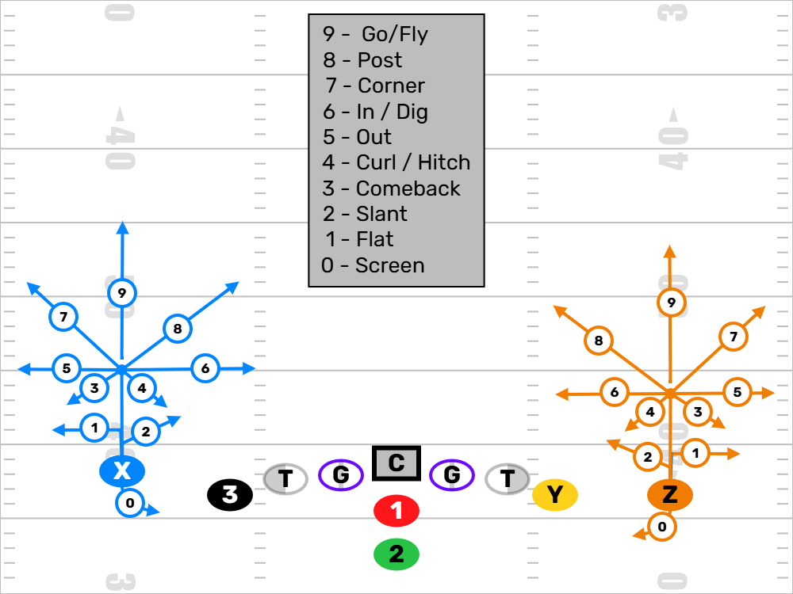

Welcome to the Wide Receiver Drills section! Here, we focus on developing the skills necessary for wide receivers to excel in youth football. From mastering route running to effective blocking techniques, these drills will help your players become more versatile and impactful on the field.
Route Tree
In most offensive formations, receivers are identified as X, Y, and Z:
- X Receiver: Lines up on the line of scrimmage, usually outside.
- Z Receiver: Lines up off the line of scrimmage, often used in motion.
- Y Receiver: Typically the tight end, aligned near the offensive line.
Below are fundamental routes every young receiver should know. These are the foundation for building more advanced concepts.
0. Screen
Setup: Varies by concept—can be to WRs (bubble/tunnel) or RBs (slip). Timing and alignment must match the blocking scheme.
Bubble Screen
Setup: Slot or outside receiver. Time your drop step to get behind the line.
Directions: Backpedal or slide outside to receive the ball behind the LOS while other WRs block in space.
Tips: Secure the catch first, then attack the alley with urgency. Use your blockers.
Slip Screen
Setup: Running back aligned next to or behind the QB.
Directions: Delay your release to sell pass protection, then slip into the flat or middle.
Tips: Stay patient and hidden behind the line. Trust the linemen to release and set up lanes.
Tunnel Screen
Setup: Outside or slot receiver. Start with a vertical or angled stem.
Directions: Take 1–2 steps upfield, then loop back inside behind the LOS toward the QB. Catch and follow inside blockers.
Tips: Don’t drift upfield. Let the tunnel form, then hit it at full speed once the catch is secure.
1. Flat
Setup: Usually from a tight or slot alignment. May motion to adjust leverage.
Directions: Release horizontally toward the sideline, staying flat and gaining width.
Tips: Get your head around quickly—this is often a hot read or first look in progression.
2. Slant
Setup: Start with an inside foot back. Lean inside to threaten vertical then break sharp.
Directions: Take 1–3 steps vertically, then break at a 45° angle across the defender’s face.
Tips: Speed is critical. Win early. Use a subtle jab step if needed to get inside leverage.
3. Comeback
Setup: Boundary side or isolated WR spot. Must sell vertical.
Directions: Push vertically to roughly 5 yards, then break back toward the sideline at a 45° angle.
Tips: Stay low and come out of the break flat. Don’t drift upfield. Timing with the QB is everything.
4. Curl / Hook / Hitch
Setup: Wide or slot. Match depth to the concept (usually 8–12 yards).
Directions: Push vertical, snap down quickly, and come back to the QB, staying square.
Tips: Work into the soft spot of zone. Show strong hands and be ready to get vertical after the catch.
5. Out
Setup: Outside alignment with space from sideline. May motion for leverage.
Directions: Push vertical to 5 or 10 yards, then break sharply at 90° toward the sideline.
Tips: Stay flat on your break. Do not round it. Timing route—ball is coming out quick.
6. In (Dig)
Setup: Mid or wide split. Use inside leverage off the line.
Directions: Push vertical to 5 or 10 yards, then break inside across the field at 90°.
Tips: Stay flat and accelerate through the route. Expect contact and work through it.
7. Corner
Setup: Outside release preferred. Sell post to force the DB inside.
Directions: Stem to 5 yards, then break at a 45° angle toward the pylon or sideline.
Tips: Keep eyes upfield and don't tip the break. Lean inside just before cutting.
8. Post
Setup: Outside release with vertical stem. Room to cut inside is essential.
Directions: Break at 5 yards on a 45° angle toward the center/post.
Tips: Sell go route before snapping inside. Make the cut crisp and accelerate through the catch window.
9. Go / Fade / Fly
Setup: Any alignment. On the outside, use a split-release to beat press.
Directions: Sprint vertical at full speed. Stay outside the numbers unless stacked.
Tips: Don’t look for the ball too early. Stack the DB or win outside leverage and hold your line.
WR Blocking
Blocking is a crucial skill for wide receivers. It helps spring running backs and protects the QB. Here are some key blocking techniques:
WR Drill Videos & Training Resources
YouTube
PlayFootball: WR Drills with Odell Beckham Jr.
PlayFootball: How to Condition Like an Elite Back
Instagram Resources
Here are some helpful reels from various creators covering wide receiver techniques, drills, and movement skills.